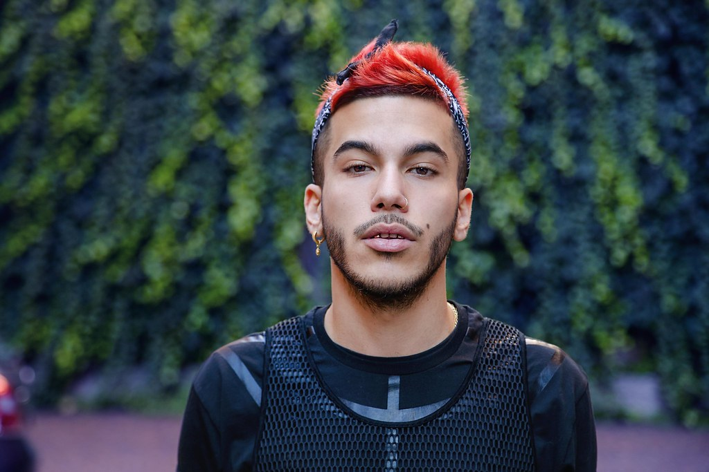

SFERA EBBASTA
“Scu”
Gionata Boschetti, in arte Sfera Ebbasta, nasce a Sesto San Giovanni il 7 dicembre del 1992. L’artista, ormai sempre presente nella classifica top 100 mondiale della piattaforma streaming Spotify, debutta soltanto nel 2016 col suo album solista “Sfera Ebbasta” distribuito dalla major discografica Universal.Dopo il secondo album, Rockstar, entra a far parte del cast di X Factor 2019. Nel novembre del 2020 esce il suo terzo disco, Famoso, che riscuote successo anche al di fuori della penisola: una dimostrazione all’estero di come l’Italia, anche nel 21esimo secolo riesca ancora ad essere patria di artisti e poeti.
Dark Polo Gang
“Cavallini, Ralph Lauren, Fendi, Gucci, Ferragamo, Calvin Klein, Burberry, Supreme”
La Dark Polo Gang, un collettivo trap nato a Roma nel 2014 e attualmente composto da Tony Effe, Wayne Santana e Dark Pyrex, a cui si aggiunge il produttore Sick Luke, col quale hanno fatto quasi l'interezza dei loro singoli. Nel 2015 esce il primo mixtape Full Metal Dark, reso disponibile per il download gratuito. Nel 2017 esce il loro primo album Twins, che debutta in cima alla classifica FIMI. Nel 2018 arriva il loro primo accordo con una major, la Universal. Nel 2018 viene pubblicato l’album Trap Lovers, ottenendo un buon successo. Dal 2020, dopo la pubblicazione di un mixtape di inediti, si sono perse le tracce…purtroppo non quelle musicali.
TEDUA
“Con molta fiducia rapporto si brucia” Tedua, pseudonimo di Matteo Molinari, nasce a Genova nel 1994. Nel 2015 esce il suo primo mixtape Aspettando Orange County California, prodotto da Charlie Charles. Nel 2018 esce il secondo album, Mowgli, seguito dal mixtape Vita Vera. Essenzialmente, lo stile musicale di Tedua si accosta al drill, ovvero dei beat particolarmente violenti e nichilisti. Fondamentalmente, non chiude le rime.
GHALI
“Cesso qui a sinistra, il bagno in fondo a destra” Ghali Amdouni nasce a Milano nel 1993. Nel 2011 fonda i Troupe D’Elite, un collettivo rap e successivamente viene messo sotto contratto dall’etichetta Tanta Roba. Lascia il gruppo nel 2016 per fondare la propria etichetta discografica: Sto Records, con il quale fa uscire pezzi molto famosi come Ninna Nanna e Pizza Kebab. Nel 2017 pubblica l’album d’esordio Album, a cui segue DNA, il secondo album pubblicato nel 2020. Ghali ha sempre dichiarato che i cantanti Stromae e Michael Jackson siano state due forti influenze nel suo stile musicale. E si vede. Noi invece per questo sito ci siamo ispirati all’ANSA.